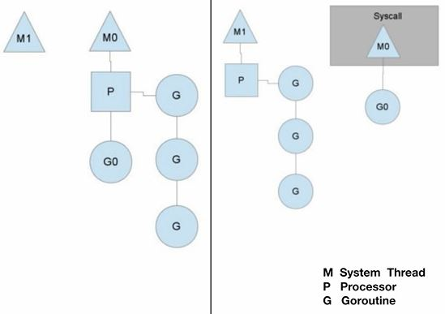
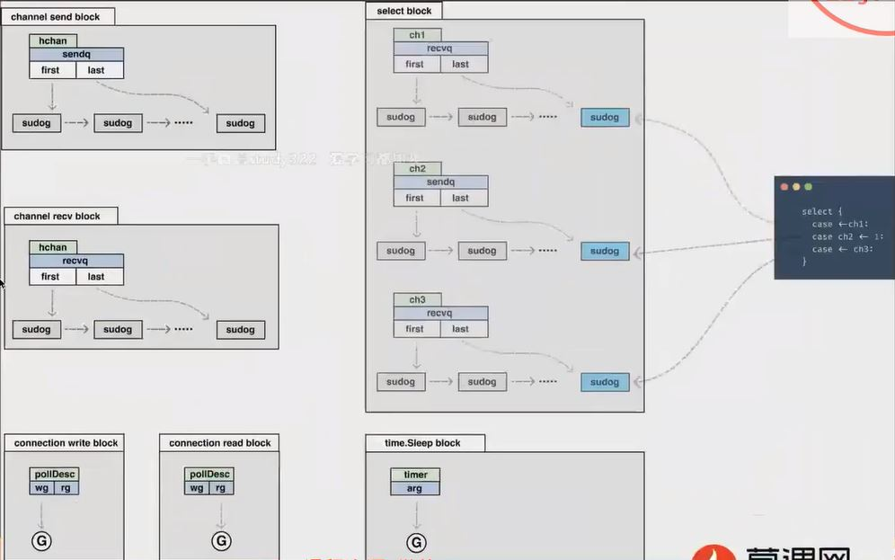
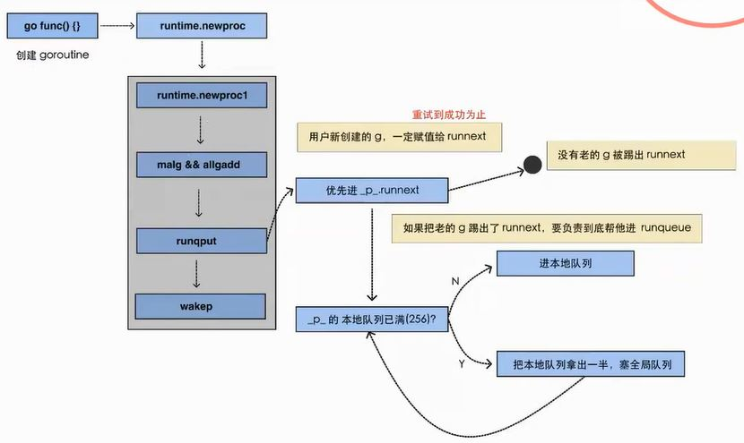
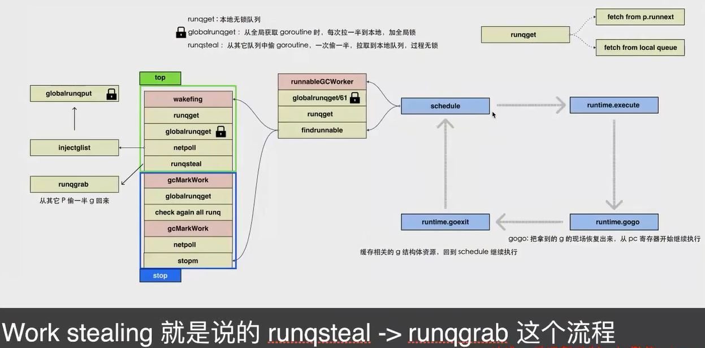

Goroutine的调度 #
- Overview 
System Thread : kernel entity Processor : go实现的协程处理器 Goroutine : 协程
组件 #
-
组件 G: goroutine, 一个计算任务。 由需要执行的代码和其上下文组成, 上下文包括: 当前代码位置, 栈顶、 栈底地址，状态等。 M: machine, 系统线程, 执行实体, 想要在CPU上执行代码, 必须有线程 P: processor, 虚拟处理器, M必须获得P才能执行代码, 否则必须陷入休眠(后台监控线程除外).
-
组件之间的关系 Processor在不同的系统线程里, 每个Processor挂载着一个协程队列，Processor依次调用Gorouine， 只有一个Gorouine是正在运行状态的。
-
P 和 M 的个数问题 [1]
- P 的数量 在程序执行的任意时刻都只有 $GOMAXPROCS 个 goroutine 在同时运行
- M 的数量 go 程序启动时，会设置 M 的最大数量，默认 10000 一个 M 阻塞了，会创建新的 M。
M 与 P 的数量没有绝对关系，一个 M 阻塞，P 就会去创建或者切换另一个 M，所以，即使 P 的默认数量是 1，也有可能会创建很多个 M 出来。
-
P 和 M 何时会被创建 [1]
- P 何时创建 在确定了 P 的最大数量 n 后，运行时系统会根据这个数量创建 n 个 P。
- M 何时创建 没有足够的 M 来关联 P 并运行其中的可运行的 G。 比如所有的 M 此时都阻塞住了，而 P 中还有很多就绪任务，就会去寻找空闲的 M，而没有空闲的，就会去创建新的 M
-
看参考文档里的图

-
协程跟线程是有区别的，线程由 CPU 调度是抢占式的，协程由用户态调度是协作式的，一个协程让出 CPU 后，才执行下一个协程。
场景 #
-
处理阻塞[能被runtime拦截到的阻塞-非阻塞] [2]
- 在线程发生阻塞的时候，不会无限制的创建线程
- 以下这些情况, 会把goroutine挂起，让g先进某个数据结构，待ready后再继续执行
不会占用线程， 线程会进入schedule，继续消费队列，执行其他的g

-
处理阻塞[不能被runtime拦截到的阻塞-阻塞] [2]
- 两种情况
- CGO
- 阻塞在syscall上时, 必须占用一个线程
- sysmon, 在专有线程中执行, 不需要绑定P就可以执行
- checkdead 常见误解 这个可以检查死锁
- netpoll inject g list to global runqueue
- retake 如果syscall卡了很久，就把p剥离(handoffp) #1 如果用户g运行了很久, 就发信号SIGURG抢占
- 两种情况
-
case
- case1 一个协程运行时间运行的特别长。 守护线程计数， 如果processor完成的goroutine数量一直不变。在这个协程的任务栈里插入一个中断的标记，读到这个中断标记后，goroutine会把自己中断下来插入到等待队列的队尾。
- case2 某个协程被io中断后， Processer会把自己移动到另一个可用的系统线程当中， 执行队列里的任务。 当这个协程io中断被唤醒后，会把自己加入到某个Processor的队列里， 或者加入到全局的等待队列里。
-
调度器的设计策略 [1]
- work stealing 机制
- hand off 机制 #1
生产端 [2] #

消费端 [2] #

参考 #
- Golang的GMP原理与调度 ***
- 《04 Go 程序是怎么跑起来的》 ***
- #64 深入浅出 Golang Runtime 【 Go 夜读 】 goroutine , go network , gc *** 未
- Golang深入理解GPM模型 *** 未